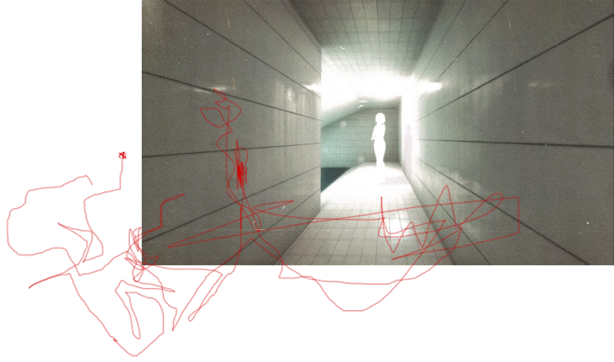
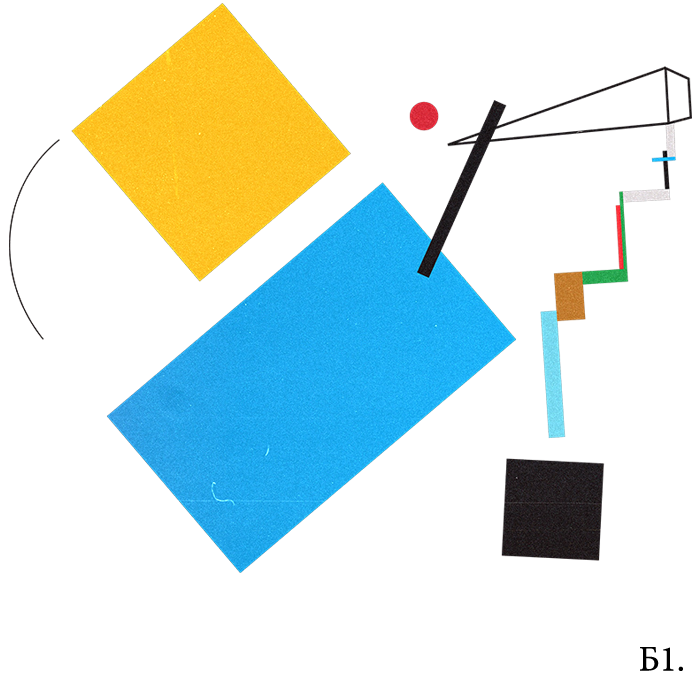

неизвестный пользователь
ВОЗМОЖНОСТЬ ГЛУБИНЫ
Как далеко возможно зайти только из за удовлетворения своих потребностей ? Любопытство , одиночество , и так дальше.. И пока я погружаюсь всё глубже и глубже..информация и чувства заволакивают пространство и последствий становится совсем не видно. Но когда я касаюсь дна , я задаю себе вопрос.. действительно ли мне всё это было нужно ? Вода кажется прозрачной , но чем её больше , тем сложнее разглядеть то, что она скрывает.